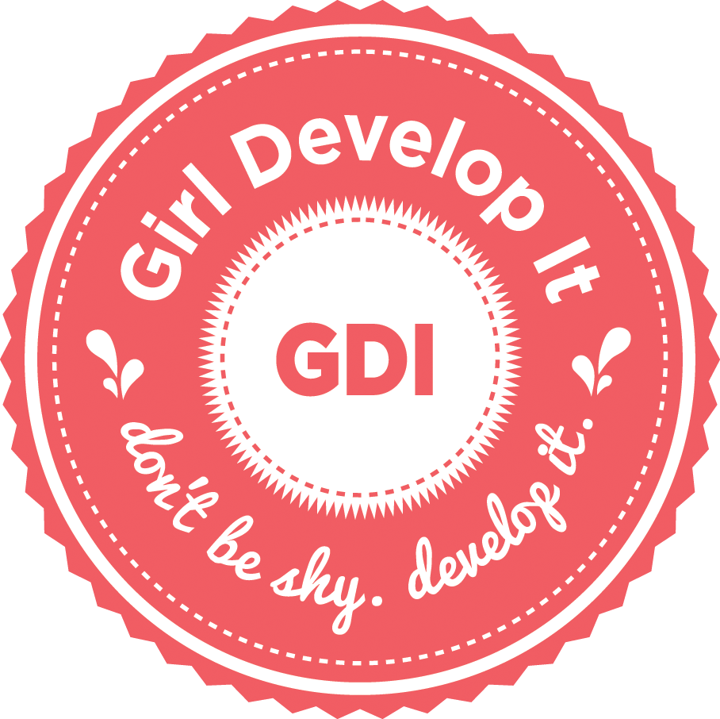

This is a list of women in tech organizations we've compiled (local and not)
If you have new ideas, please feel free to add them and to help beautify this page.
Local Groups
- Salt Lake Pyladies - http://www.meetup.com/Salt-Lake-Pyladies/
- Women Tech Council - http://www.womentechcouncil.org/
National Groups
- PHPWomen - http://phpwomen.org/blog/
- RailsGirl/RailsBridge
Ada Developers Academy
This is a tuition-free programming school just for women in Seattle. They have $1000 monthly stipends available. The program is "24 weeks of intensive in-class instruction, followed by up to six months of internship at a Puget Sound region tech company"
http://adadevelopersacademy.org/